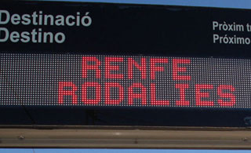
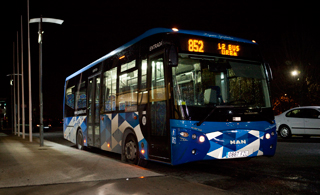
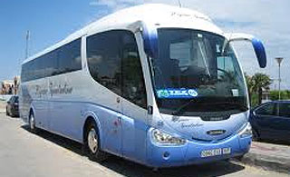
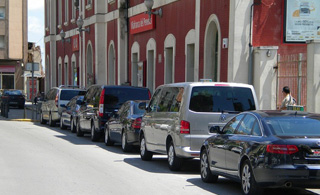

- AMADÓSant Pere, 2
- BOSCH Parellada, 25de torn el 19 i 27
- CUADRASIgualada, 48de torn el 20, 25 i 30
- JONCHEugeni d’Ors, s/nde torn el 22 i 28
- MIRALLESParellada, 2 / Cort, 1
- OLIVÉEspirall, 23
- PEDREROLParellada, 39de torn el 23 i 31
- PLANASRbla. La Girada, 15
- PUERTOTossa de Mar, 20de torn el 24 i 29
- VIÑALSCort, 37de torn el 21 i 26

L'estació de Rodalies Renfe de Vilafranca del Penedès està situada a la plaça de l'Estació.
Forma part de la línia C4 de Rodalies Renfe, entre Manresa i Sant Vicenç de Calders.
Forma part de la línia C4 de Rodalies Renfe, entre Manresa i Sant Vicenç de Calders.

Vilafranca del Penedès disposa de tres línies de bus urbà.
La Línia 1, identificada en el plànol i als horaris de mà amb color vermell, connecta l'Hospital Comarcal amb l'estació de bus i amb altres punts de Vilafranca, com el centre sociosanitari Ricard Fortuny.
Funciona de dilluns a dissabte de les 6,50h a les 21,41h.
Última sortida a les 20,50h.
Els diumenges i festius funciona des de les 6,50h a les 15,41h.
Última sortida a les 14,50h.
La Línia 2, identificada en el plànol i als horaris de mà amb color verd, connecta l'Hospital Comarcal amb l'estació de tren, amb la Zona esportiva i amb altres punts de Vilafranca.
Funciona de dilluns a divendres de les 8,10h a les 21,54h.
Última sortida a les 21,10h.
El cap de setmana i festius no dóna servei.
La Línia 3, identificada en el plànol i als horaris de mà amb color blau, connecta l'Hospital Comarcal amb el centre de la vila, amb les estacions de bus i tren, i amb altres punts de Vilafranca.
Funciona de dilluns a divendres de les 6,58h a les 19,58h.
Última sortida a les 19,28h. Interval aproximat de pas en cada parada de 30 min.
Els cap de setmana i festius no dóna servei.
La Línia 1, identificada en el plànol i als horaris de mà amb color vermell, connecta l'Hospital Comarcal amb l'estació de bus i amb altres punts de Vilafranca, com el centre sociosanitari Ricard Fortuny.
Funciona de dilluns a dissabte de les 6,50h a les 21,41h.
Última sortida a les 20,50h.
Els diumenges i festius funciona des de les 6,50h a les 15,41h.
Última sortida a les 14,50h.
La Línia 2, identificada en el plànol i als horaris de mà amb color verd, connecta l'Hospital Comarcal amb l'estació de tren, amb la Zona esportiva i amb altres punts de Vilafranca.
Funciona de dilluns a divendres de les 8,10h a les 21,54h.
Última sortida a les 21,10h.
El cap de setmana i festius no dóna servei.
La Línia 3, identificada en el plànol i als horaris de mà amb color blau, connecta l'Hospital Comarcal amb el centre de la vila, amb les estacions de bus i tren, i amb altres punts de Vilafranca.
Funciona de dilluns a divendres de les 6,58h a les 19,58h.
Última sortida a les 19,28h. Interval aproximat de pas en cada parada de 30 min.
Els cap de setmana i festius no dóna servei.

La companyia la Hispano Igualadina opera des de l'estació d'autobusos de Vilafranca del Penedès, situada a la carretera de Vilanova i la Geltrú.
Les parades de la companyia Autocars Plana a Vilafranca del Penedès són a l'estació d'autobusos, situada a la carretera de Vilanova i la Geltrú. Autocars Plana ofereix el servei de transport entre Vilafranca i diferents poblacions del Garraf.

Des de la Parada de Taxi ubicada a la PL. Estació de Vilafranca del Penedès li donem la benvinguda i esperem que els nostres serveis s'adaptin a les seves necessitats. Som un equip de professionals amb una dilatada experiència oferint un servei de qualitat.
Telèfons: 938 903 627 | 938 175 739
Telèfons: 938 903 627 | 938 175 739